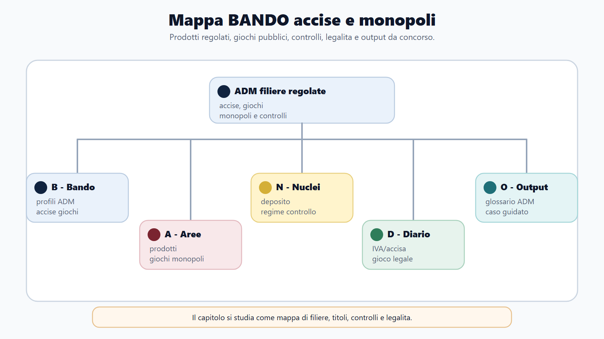
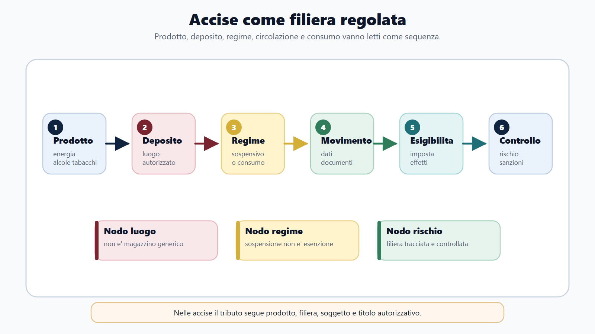
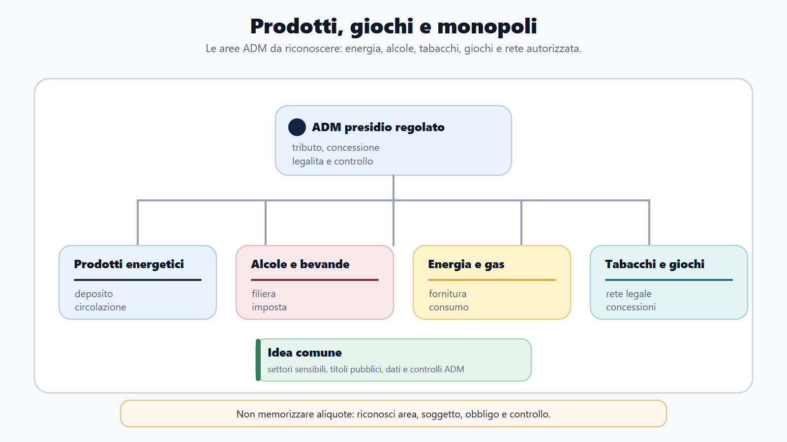
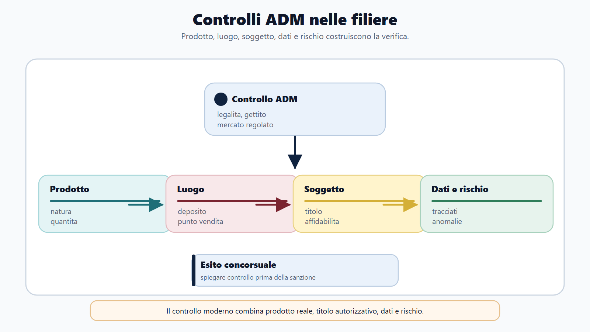

VOL-03 · Capitolo 26
M-FC02
Accise, giochi e monopoli
Studiare ADM come una semplice variante dell’Agenzia delle Entrate porta fuori strada. Nelle accise il tributo segue quantità e impiego dei prodotti; nei giochi e nei monopoli entrano in campo autorizzazioni, concessioni, reti telematiche e tutela dell’ordine pubblico.
01 · Il problema in prova
Tre lessici insieme
Il lessico fiscale comprende prodotto, fatto generatore, esigibilità e aliquota. Quello autorizzatorio: deposito, licenza, concessione e rivendita. Quello operativo: registri, flussi telematici, inventari, controlli e verbalizzazione.
Che cos’è l’accisa
Imposta indiretta sulla produzione o sul consumo di prodotti specifici. Fonte nazionale centrale: D.Lgs. 504/1995, Testo unico delle accise, coordinato con il diritto dell’Unione e con riforme successive, tra cui il D.Lgs. 141/2024 per i profili interessati. Spesso si calcola sulla quantità fisica, sul contenuto energetico o sul titolo alcolometrico.
A che serve in prova
A distinguere accisa, IVA e imposta di consumo; a spiegare deposito fiscale e regime sospensivo; a ricostruire EMCS ed e-AD; a collegare riserva statale, concessione, tutela del giocatore e contrasto all’illegalità. Sequenza: prodotto o attività → luogo o canale → soggetto e titolo → documento → controllo.
Sospensione non è esenzione.
Nel regime sospensivo il pagamento è differito e il prodotto resta sottoposto a obblighi e garanzie. Nell’esenzione, se ne ricorrono le condizioni, il tributo non è dovuto per una specifica destinazione o fattispecie. Il deposito fiscale non è un luogo esente da imposta.
02 · BANDO
Cinque decisioni su questo capitolo
| Che cosa fai | Se la salti | |
|---|---|---|
| B — Bando | Cerca TUA, accise, energetici, alcoli, tabacchi, deposito fiscale, giochi, concessioni, monopoli. | Studi ADM come una filiale dell’IVA. |
| A — Aree | Collega tributario, diritto UE, amministrativo, autorizzazioni, sanzioni e controlli. | Tratti il gioco come una tassa unica. |
| N — Nuclei | Esigibilità, regime sospensivo, depositario, e-AD, rete legale, concessionario, tutela dei minori. | Confondi fatto generatore ed esigibilità. |
| D — Diario | Accisa/IVA, concessione/autorizzazione, legalità/assenza di rischio. | Ripeti le trappole all’orale. |
| O — Output | Movimentazione in sospensione e verifica presso un punto di gioco. | Elenco di prodotti senza filiera. |
03 · Mappa
Prodotti, soggetti, titoli, flussi, controlli
La mappa unisce accise e giochi senza appiattirli. Le imposte dichiarative partono spesso dal contribuente; le accise partono anche dal prodotto, dal luogo e dalla destinazione d’uso.

Il bando attiva TUA, deposito, e-AD, concessione e tutela: tre lessici, un solo ufficio ADM.
04 · Accisa
Fatto generatore ed esigibilità
Il fatto generatore è l’evento che fa nascere l’obbligazione. L’esigibilità è il momento in cui l’amministrazione può pretendere il pagamento. Fabbricazione o importazione collocano il prodotto nell’ambito fiscale; il pagamento può essere differito finché resta in regime sospensivo. L’immissione in consumo rende normalmente esigibile l’accisa.
Non è IVA
L’IVA colpisce il valore aggiunto in via generale. L’accisa interessa categorie determinate. I due tributi possono concorrere sullo stesso prodotto. Alcuni prodotti sono assoggettati a imposte di consumo che non appartengono necessariamente al nucleo armonizzato: si legge la norma del prodotto.
Irregolarità
Ammanchi non giustificati, svincoli irregolari o inosservanze nella circolazione possono produrre effetti impositivi e sanzionatori. L’ammanco contabile non prova da solo una sottrazione fraudolenta.
05 · Filiera
Deposito, e-AD, appuramento
Il deposito fiscale è un impianto autorizzato nel quale i prodotti possono essere fabbricati, trasformati, detenuti, ricevuti o spediti in sospensione. Il depositario tiene registri, documenta movimenti, presta garanzia e comunica le anomalie. Il destinatario registrato può ricevere da un altro Stato membro in sospensione, ma non opera come un depositario.

EMCS traccia la circolazione unionale in sospensione. Lo speditore presenta l’e-AD; il destinatario trasmette la nota di ricevimento. Il riscontro materiale resta necessario.
06 · Prodotti
Energetici, alcoli, tabacchi
Lo stesso bene può subire regimi diversi a seconda della destinazione comprovata. Il nome commerciale, da solo, non qualifica il caso.
| Settore | Che cosa conta | Controllo tipico |
|---|---|---|
| Energetici ed energia | Categoria, impiego (carburazione, combustione, produzione), soggetto, prova. | Misurazioni, densità, temperatura, cali, registri. Gas ed energia: fornitura e consumo. |
| Alcole e bevande | Categoria, titolo alcolometrico, impianto autorizzato, denaturazione, destinazione agevolata. | Rese, perdite, uso diverso da quello contabilizzato. Non applicare l’e-AD a ogni bottiglia. |
| Tabacchi e collegati | Accisa e rete distributiva regolata. Depositi, rivendite, contrassegni quando richiesti. | Tre piani: fiscale, distributivo, materiale. Il rivenditore non ha libertà commerciale illimitata. |
Non indica un unico modello. Nei tabacchi richiama regolazione pubblica di produzione, distribuzione e vendita; nei giochi, riserva statale e modello concessorio. La gestione diretta ricorre quando l’attività è esercitata dall’amministrazione stessa.
07 · Giochi
Riserva statale e concessione
Lo Stato definisce quali giochi possano essere offerti e affida la gestione a soggetti selezionati. Il D.Lgs. 41/2024 ha riordinato il settore, con particolare riferimento ai giochi a distanza. Non attribuire a quel decreto la disciplina completa di ogni gioco terrestre.
Un concessionario non può introdurre liberamente un nuovo gioco «perché opera per conto dello Stato». La concessione abilita soltanto alle attività e alle condizioni previste. Tipologia, regole tecniche, raccolta e canali devono essere autorizzati.
Rete fisica, rete a distanza e filiera: il concessionario resta responsabile. Titolo, flussi e tutela dei minori non si confondono.

08 · Tutela
Legale non significa senza rischi
ADM verifica il divieto di gioco ai minori, le caratteristiche degli apparecchi, la correttezza delle vincite, la pubblicità nei limiti consentiti, le procedure di identificazione e gli strumenti di gioco responsabile. Limiti, autoesclusione, avvertenze e tracciabilità hanno una funzione di tutela oltre che amministrativa.
Rete a distanza
Identificazione del giocatore, conto di gioco, tracciabilità di versamenti e vincite, sicurezza della piattaforma, limiti. Il dominio deve appartenere alla rete autorizzata. L’offerta da siti privi di concessione viene contrastata con gli strumenti previsti.
Gioco illegale
Offerta senza titolo, apparecchi alterati, raccolta su reti abusive, intermediazione vietata. ADM coopera con Guardia di finanza, forze di polizia e altre autorità. La qualificazione penale o amministrativa dipende dalla fattispecie: si descrivono i fatti senza improvvisare la sanzione.
09 · Prelievi
Non esiste una sola tassa sul gioco
Prelievi erariali, imposte uniche, canoni concessori e altre entrate previste. Aliquote e basi sono dati mobili: prima la struttura, poi i valori sul testo e sui provvedimenti ADM richiamati dal bando.
| Passaggio | Che cosa individuare | Controllo |
|---|---|---|
| Gioco | Famiglia e canale di offerta | Titolo e regole applicabili |
| Raccolta | Somme acquisite dal sistema | Dati di rete e contabilità |
| Vincite | Somme restituite secondo le regole | Coerenza dei flussi |
| Base | Grandezza sulla quale opera il prelievo | Norma vigente per quel gioco |
| Filiera | Concessionario e altri soggetti | Compensi, versamenti, responsabilità |
10 · Controllo ADM
Titolo, dati, riscontro, verbale
Nelle accise il controllo può iniziare dall’autorizzazione, proseguire con sopralluogo e misurazioni e concludersi con la riconciliazione di registri e dichiarazioni. Nei giochi: concessioni, sistemi centrali, punti vendita, apparecchi, conti di gioco e movimenti finanziari. Un solo dato non basta.

Identificare soggetto e titolo; delimitare periodo e prodotto; confrontare elementi contabili, telematici e fisici; verbalizzare; contraddittorio; qualificare l’irregolarità.
11 · Caso guidato
Ammanco in un deposito energetico
La giacenza fisica è inferiore a quella contabile. Il depositario invoca cali naturali e un errore di misurazione.
| Passaggio | Ragionamento |
|---|---|
| Perimetro | Prodotto, periodo, serbatoio e regime fiscale. |
| Dati | Registri, e-AD, note di ricevimento, fatture, tarature e misurazioni. |
| Riscontro tecnico | Temperatura, densità, tolleranze, movimentazioni e metodo di calcolo. |
| Qualificazione | Solo la parte non giustificata secondo le regole può produrre conseguenze d’imposta e sanzionatorie. |
| Procedura | Verbalizzazione, osservazioni del depositario, distinzione tra recupero del tributo, sanzione amministrativa ed eventuale profilo penale. |
12 · Verifica
Due domande da saper spiegare
Che cosa si intende per regime sospensivo delle accise?
Definire l’accisa; distinguere fatto generatore ed esigibilità; spiegare deposito fiscale, depositario e garanzia; descrivere e-AD, ricevimento e appuramento; chiudere con immissione in consumo e irregolarità.
Il concessionario può introdurre un nuovo gioco?
No. Opera entro il titolo. Tipologia di gioco, regole tecniche, raccolta e canali devono essere autorizzati secondo la disciplina pubblica. ADM conserva regolazione, vigilanza e poteri di controllo.
13 · Anti-confusione
Sei coppie da non scambiare
| Confusione | Formula corretta |
|---|---|
| Accisa = IVA | L’accisa segue prodotti, impieghi e filiere regolati. |
| Deposito fiscale = magazzino | Impianto autorizzato, con regole di sospensione e controllo. |
| Regime sospensivo = esenzione | La sospensione differisce l’esigibilità; non elimina il tributo. |
| Concessione = gestione diretta ADM | Il concessionario esercita entro un titolo; ADM conserva la funzione pubblica. |
| Gioco legale = gioco senza rischi | La legalità riguarda titolo e rete, non elimina i rischi per la persona. |
| Prelievo = unica tassa sul gioco | Individuare gioco, base, flusso, soggetto e fonte vigente. |
14 · Mini-esercizio
Prodotto, titolo, documento, controllo
Per ciascuna situazione indica il piano da verificare per primo: fiscale, autorizzatorio o operativo.
| Situazione | Primo piano |
|---|---|
| Giacenza fisica inferiore ai registri in un deposito | Operativo e fiscale: misurazioni, e-AD, regime, parte non giustificata. |
| Punto di gioco con apparecchio non collegato | Autorizzatorio e tecnico: titolo, identificativi, rete, flussi. |
| Prodotto energetico dichiarato per uso agevolato | Fiscale: categoria, impiego effettivo, prova della destinazione. |
| Sito di gioco senza concessione | Regolatorio: offerta illegale, cooperazione, qualificazione della condotta. |
Il funzionario consulta solo i dati necessari, registra gli accessi, evita anticipazioni sull’esito e tiene separati accertamento tecnico, decisione amministrativa ed eventuale notizia di reato.
15 · Da tenere ferme
Cinque regole, con il perché
1. L’accisa colpisce prodotti determinati; fatto generatore ed esigibilità possono non coincidere.
2. Il deposito fiscale consente operazioni in sospensione, non in esenzione definitiva.
3. EMCS ed e-AD tracciano le movimentazioni unionali in regime sospensivo; il riscontro materiale resta necessario.
4. Il gioco pubblico è riservato allo Stato e normalmente esercitato tramite concessione.
5. ADM controlla tributo, titoli, reti, prodotti e tutela degli utenti.
16 · Perché è ADM
Dal prodotto al verbale
Le imposte dichiarative ordinarie partono spesso dal contribuente e dalla dichiarazione. Le accise partono anche dal prodotto, dal luogo in cui si trova, dalla destinazione d’uso e dalla fase della filiera. Giochi e monopoli aggiungono titoli concessori, reti e controlli tecnici.
Prodotto o attività
Categoria normativa, gioco, canale.
Luogo e titolo
Deposito, rivendita, punto di gioco, concessione.
Documento e controllo
e-AD, registri, flussi, misurazione, verbale.
Prossimo capitolo
Catasto, cartografia, estimo e pubblicità immobiliare
La filiera ADM è distinta da quella dichiarativa. Il capitolo successivo torna all’Agenzia delle Entrate, sui servizi Territorio e SPI: visura e ispezione ipotecaria rispondono a domande diverse.